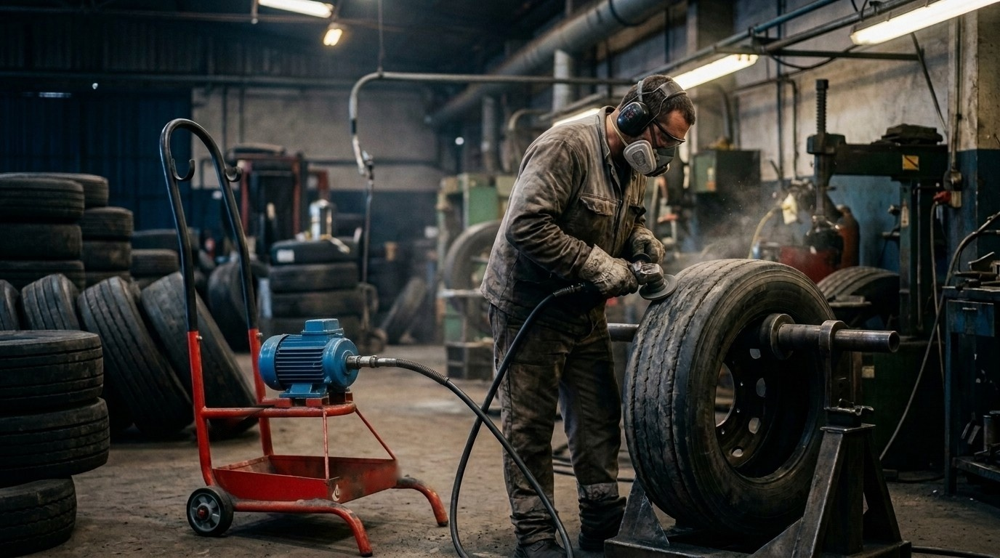
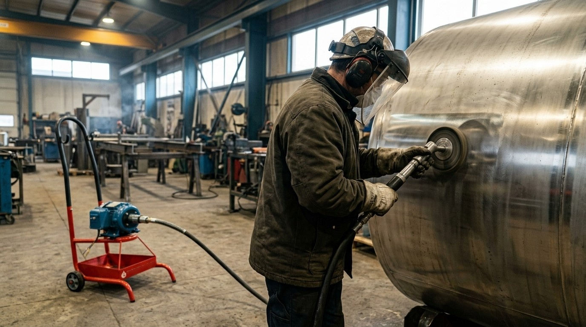

Tubo limpo.
Caldeira
rendendo.
Motores e eixos flexíveis para limpeza de tubos em usinas, caldeiras e trocadores de calor. Fabricados em Marília/SP desde 1964.
pelo WhatsApp Atendimento direto com a equipe técnicaIniciar conversa
Cada milímetro de incrustação é combustível queimado.
Tubo sujo troca menos calor. A caldeira passa a gastar mais lenha, óleo ou bagaço para entregar o mesmo vapor. A limpeza mecânica devolve a eficiência.
Três máquinas.
Um sistema.
Motor, eixo flexível, caneta e ferramenta saem da mesma fábrica — compatíveis entre si e com reposição garantida.
MU 4500Usinas e evaporadores

O motor tradicional das usinas de açúcar. Alta rotação para arrancar incrustação endurecida dos tubos de evaporadores, trabalhando com roseta de aço.
| Rotação | 4.500 rpm |
| Motor | Trifásico 3 CV · 220 / 380 / 440 V |
| Eixo flexível | Ø 19, 25 ou 30 mm · 5 a 12 m |
| Ferramenta indicada | Roseta de aço |
| Venda | Exclusiva pela matriz, Marília/SP |
MC 2000Caldeiras industriais
Base móvel inclusa e eixo de até 30 metros: leva a limpeza até a caldeira, sem desmontar nada. Ideal com escova de aço.
| Rotação | 2.000 rpm |
| Motor | Trifásico 3 CV · 220 / 380 / 440 V |
| Eixo flexível | Ø 19 a 34 mm · 5 a 30 m |
| Vem com | Eixo, caneta e base móvel |
ME 1.5Esmeril com mangote
Um motor, duas funções. A troca da peça na ponta do eixo transforma o equipamento de escareação de pneus em polidor de metais.


- Rotação
- 3.450 rpm
- Motor
- 1,5 CV mono ou trifásico
- Eixo flexível
- 2 ou 3 m
- Disco / lixa
- até 6"
Onde nossas máquinas trabalham
Do evaporador da usina à recapagem de pneus: oito setores que dependem de tubo limpo e superfície bem preparada.
Três gerações.
Mesma fábrica.
Em 1964, Heráclito Marques da Costa e o filho Antônio trocaram a limpeza manual dos evaporadores por uma máquina. A família segue em Marília, fabricando cada equipamento.
Conheça nossa históriaPerto de quem usa.
Matriz em Marília, filiais em Recife e Pontal e 13 revendas autorizadas com acessórios e reposição.
São Paulo
- Matriz Marques da CostaMarília
- Filial PontalPontal
- Norte Sul · Pré-Forte · TecnoborSão Paulo
- Comax · SabraferGuarulhos
- Fabio Pelicer · Máquinas PLCSão José do Rio Preto
- PalhinhaRibeirão Preto
Sul
- Casa da CaldeiraPaiçandu · PR
- TecnoborItajaí · SC
- Loop IndustrialBento Gonçalves · RS
MG e ES
- Gebor ComercialContagem · MG
- Gebor ImportaçãoSerra · ES
Nordeste
- Filial NordesteRecife · PE